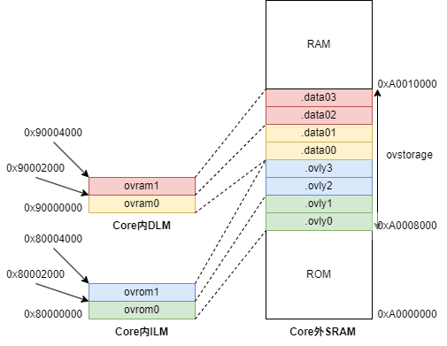

Using the OVERLAY Command in Linker Scripts¶
Problem Description¶
The SRAM inside a CPU Core is fast, small in capacity, and large in area. In embedded systems, this on-Core RAM is very likely unable to hold all functions.
To solve this problem, one approach is to use the OVERLAY command in the linker script.
The OVERLAY command provided by GNU ld allows multiple sections to be "overlaid" on the same memory region. Several sections can share the same runtime
VMA (Virtual Memory Address); at runtime, the loading and unloading of these overlay sections must be managed manually.
So how do you use the OVERLAY command in Nuclei Studio IDE? This article provides a sample program demonstrating how to use the OVERLAY command.
Solution¶
Sample Program¶
demo_overlay is a sample project created with
Nuclei Studio IDE 2025.02.
It supports both Linux and Windows platforms and demonstrates how to use the OVERLAY command in a linker script.
The code in the sample project is essentially the same as the code provided in Overlay Sample Program. The main differences are that the test results are printed in the main function, and that the linker script has been modified according to the address mapping of evalsoc.
├── bar.c
├── baz.c
├── foo.c
├── grbx.c
├── overlays.c
├── ovlymgr.c
└── ovlymgr.h
The original code can be obtained from gdb/testsuite/gdb.base.
Overlay Layout¶

On our evalsoc, if a program cannot fit entirely into the Core's ILM/DLM, the approach shown in the figure above can be adopted:
some sections are dynamically loaded into the ILM/DLM in the form of overlays and executed there.
The LMA (Load Memory Address) of all eight sections .ovlyx and .data0x is located in the SRAM outside the Core,
but their VMAs are inside the Core, and some of them overlap.
Writing the Linker Script¶
In the MEMORY command, first define the memory regions you need — for example, the four Core-internal regions ovrom0, ovrom1,
ovram0, ovram1, and the Core-external region ovstorage. The size of each memory region can be adjusted according to the actual size of the code and data.
MEMORY
{
rom (rxa!w) : ORIGIN = SRAM_MEMORY_BASE, LENGTH = SRAM_MEMORY_ROM_SIZE
ovstorage (rwa) : ORIGIN = SRAM_MEMORY_BASE + SRAM_MEMORY_ROM_SIZE, LENGTH = SRAM_OVLY_STORAGE_SIZE
ram (wxa!r) : ORIGIN = SRAM_MEMORY_BASE + SRAM_MEMORY_ROM_SIZE + SRAM_OVLY_STORAGE_SIZE, LENGTH = SRAM_MEMORY_SIZE - SRAM_MEMORY_ROM_SIZE - SRAM_OVLY_STORAGE_SIZE
ovrom0 (rwx) : ORIGIN = ILM_MEMORY_BASE, LENGTH = ILM_OVLY_SIZE0
ovrom1 (rwx) : ORIGIN = ILM_MEMORY_BASE + ILM_OVLY_SIZE0, LENGTH = ILM_OVLY_SIZE1
ovram0 (rwx) : ORIGIN = DLM_MEMORY_BASE, LENGTH = DLM_OVLY_SIZE0
ovram1 (rwx) : ORIGIN = DLM_MEMORY_BASE + DLM_OVLY_SIZE0, LENGTH = DLM_OVLY_SIZE1
}
The OVERLAY command must be placed inside the SECTIONS command. For example, the code below places the two sections .ovly0 and .ovly1
into the same VMA address range represented by ovrom0, while their LMAs are contiguously located in the address range represented by ovstorage.
OVERLAY :
{
.ovly0 { *foo.o(.text .text.*) }
.ovly1 { *bar.o(.text .text.*) }
} >ovrom0 AT>ovstorage
Referring to Automatic Overlay Debugging,
the following code in the linker script exposes the VMAs, LMAs, and count of the overlay sections to C code through the _ovly_table and _novlys variables;
the dynamic loading and unloading of sections is then further implemented in ovlymgr.c.
/* _ovly_table used for gdb debug overlay sections */
_ovly_table = .;
_ovly0_entry = .;
LONG(ABSOLUTE(ADDR(.ovly0)));
LONG(SIZEOF(.ovly0));
LONG(LOADADDR(.ovly0));
LONG(0);
...
_novlys = .;
LONG((_novlys - _ovly_table) / 16);
Test Results¶
Examining the map file generated after compilation, you can see that the corresponding code sections and data sections are all allocated with the expected VMAs and LMAs.
For example, .ovly0 and .ovly1 share the same VMA 0x80000000, while their LMAs are 0xa0008000 and 0xa0008028 respectively.
.ovly0 0x80000000 0x28 load address 0xa0008000
*foo.o(.text .text.*)
.text.foo 0x80000000 0x28 ./application/foo.o
0x80000000 foo
[!provide] PROVIDE (__load_start_ovly0 = LOADADDR (.ovly0))
[!provide] PROVIDE (__load_stop_ovly0 = (LOADADDR (.ovly0) + SIZEOF (.ovly0)))
.ovly1 0x80000000 0x28 load address 0xa0008028
*bar.o(.text .text.*)
.text.bar 0x80000000 0x28 ./application/bar.o
0x80000000 bar
[!provide] PROVIDE (__load_start_ovly1 = LOADADDR (.ovly1))
[!provide] PROVIDE (__load_stop_ovly1 = (LOADADDR (.ovly1) + SIZEOF (.ovly1)))
In the main function, OverlayLoad is used to switch between different functions, and finally the return values of each function are accumulated to verify the accumulated result.
/* load .text and .data for `foo` */
OverlayLoad (0);
OverlayLoad (4);
a = foo (1);
/* load .text and .data for `bar` */
OverlayLoad (1);
OverlayLoad (5);
b = bar (1);
/* load .text and .data for `baz` */
OverlayLoad (2);
OverlayLoad (6);
c = baz (1);
/* load .text and .data for `grbx` */
OverlayLoad (3);
OverlayLoad (7);
d = grbx (1);
e = a + b + c + d;
if (e != ('f' + 'o' +'o'
+ 'b' + 'a' + 'r'
+ 'b' + 'a' + 'z'
+ 'g' + 'r' + 'b' + 'x')) {
printf ("Overlay Test FAIL\r\n");
} else {
printf ("Overlay Test PASS\r\n");
}
Testing through QEMU simulation or on an FPGA development board yields the following result, where Overlay Test PASS indicates that the result meets expectations.
Nuclei SDK Build Time: Sep 25 2025, 17:02:19
Download Mode: SRAM
CPU Frequency 16003235 Hz
CPU HartID: 0
Overlay Test PASS
Notes¶
- When a data section overlay is about to replace a section, its data must be saved — that is, an "unload" operation is required to save the data into external SRAM; a code section, on the other hand, is read-only and therefore does not need to be unloaded.
- In the sample project, neither the ILM nor the DLM goes through the cache, so cache coherency does not need to be considered. However, if the VMA of an overlay section
is located in a cacheable region, cache coherency generally must be taken into account, unless there is hardware-supported snooping between the ICache and DCache.
For more details, refer to the implementation of
ovlymgr.cin the sample project.